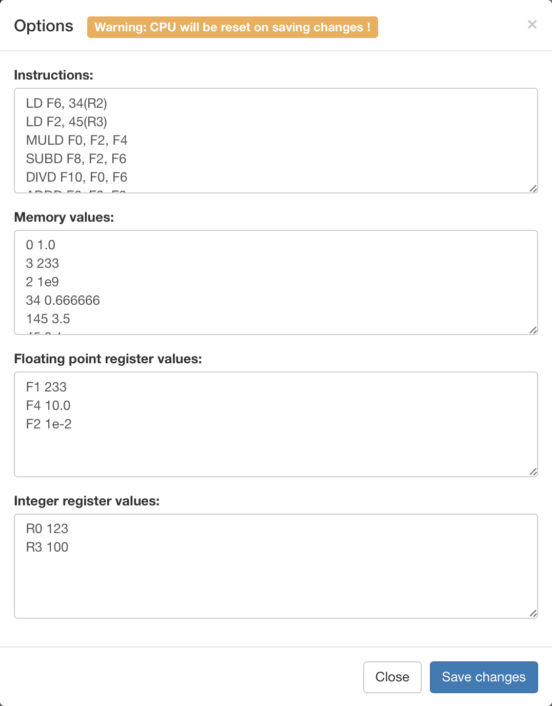
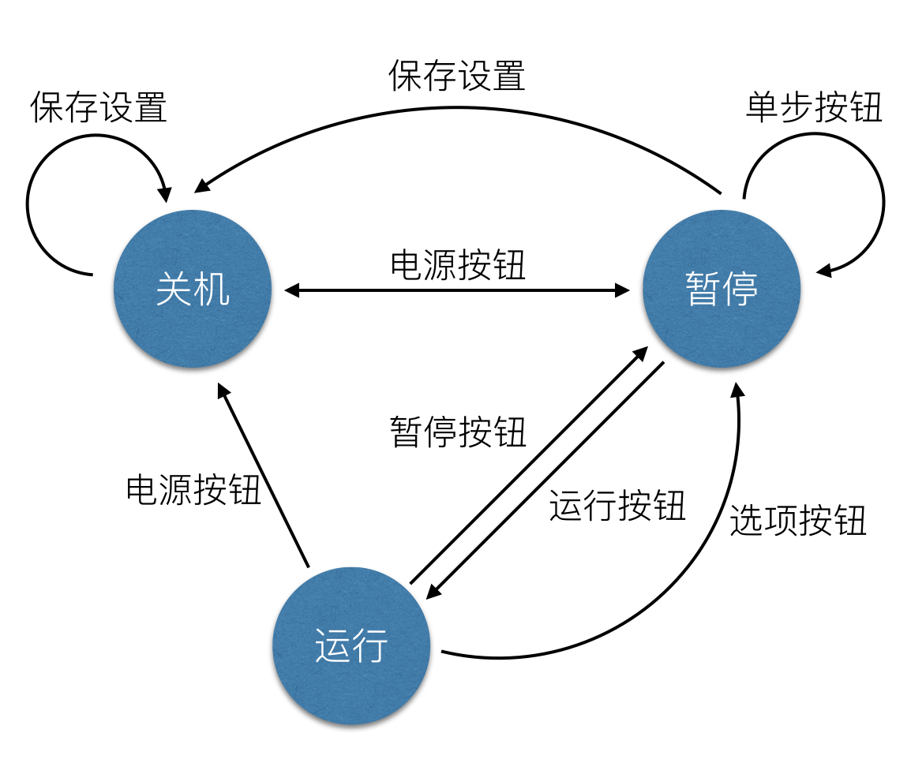

用户使用手册
软件安装和启动
为了获取到较为良好的用户体验，经过多方考量，我们小组决定直接使用一个网页，通过编写javascript代码来实现Tomasulo算法模拟器，软件的所有文件如下：

其中，index.html既是软件的入口，直接用浏览器打开index.html，无须安装其他任何依赖，即可运行本软件。
注：请使用最新版的Chrome或者Safari浏览器以获取最佳体验。
软件运行截图及功能介绍
软件运行时截图：

为了模拟Tomasulo算法，我们使用javascript模拟了一个CPU，对命令进行硬件级的模拟；在页面的右上方有5个按钮，我们可以通过这5个按钮控制CPU的行为，包括开关机、启动、暂停和初始化，在页面的中间则是若干表格，描述当前CPU内部的情况，其中“Instruction Queue”表格描述指令队列，“Load/Store Queue”表格表示Tomasulo算法中的存取队列，“Memory”表格则表示内存中对应地址相应的值（注：由于内存一般来说非常大，所以只有被初始化和被修改了的内存块会被显示出来），“Reservation Stations”表格描述Tomasulo算法中的保留站，“Floating Point Registers”和“Integer Registers”则分别描述浮点寄存器和整数寄存器对应的值。
5个控制按钮
在页面的右上方，是软件的5个控制按钮，你所需要进行的所有操作均可以通过这5个按钮来实现，它们各自的功能如下：
 开机关机按钮：默认情况下CPU是关机状态，在关机状态下你可以通过“选项”按钮（详见下文）对CPU进行一些初始化操作；当你按下此按钮，CPU将由关机状态切换到开机且暂停状态，此时CPU会根据初始化时设定的内容对页面进行一些设置，比如，操作命令将会被按行解析，分析出每条命令的操作类型、源操作数和目标操作数，然后将其依次放入“Instruction Queue”中，同时也会根据设定的内存值和寄存器值，将“Memory”、“Floating Point Registers”和“Integer Registers”表格中对应的位置进行初始化
开机关机按钮：默认情况下CPU是关机状态，在关机状态下你可以通过“选项”按钮（详见下文）对CPU进行一些初始化操作；当你按下此按钮，CPU将由关机状态切换到开机且暂停状态，此时CPU会根据初始化时设定的内容对页面进行一些设置，比如，操作命令将会被按行解析，分析出每条命令的操作类型、源操作数和目标操作数，然后将其依次放入“Instruction Queue”中，同时也会根据设定的内存值和寄存器值，将“Memory”、“Floating Point Registers”和“Integer Registers”表格中对应的位置进行初始化运行按钮：只有CPU处于开机且暂停状态下才能使用此按钮，点击此按钮CPU将处于自动运行状态，在此种状态下，CPU将以1Hz的时钟周期运行，并且更新的值会出现绿色的闪烁
 暂停按钮：当CPU处于自动运行状态时，点击此按钮可以将CPU暂停，此时你可以详细查看当前各个表格中的值，你也可以使用运行按钮继续从当前状态启动CPU，也可以使用手动按钮（详见下文）让CPU继续执行一个时钟周期
暂停按钮：当CPU处于自动运行状态时，点击此按钮可以将CPU暂停，此时你可以详细查看当前各个表格中的值，你也可以使用运行按钮继续从当前状态启动CPU，也可以使用手动按钮（详见下文）让CPU继续执行一个时钟周期手动按钮：只有当CPU处于暂停状态时才可以使用此按钮，手动按钮既是手动CLK，就是说，每次点击此按钮，都会让CPU执行一个时钟周期；使用此按钮，你可以方便的将CPU运行到你所关心的时钟周期，对于理解Tomasulo算法非常有帮助
选项按钮：点击选项按钮，会弹开如下的对话框，在这个弹出框中你可以进行CPU的初始化设置，最上面的文本框是命令编辑框，你可以将你需要执行的命令按行写入此框中；在“Memory values”编辑框中你可以设置内存的初始值，格式是每行两个数字描述一个内存值，每行的前一个数值表示内存地址，第二个值表示该内存中的值；在“Floating point register values”和“Integer register values”编辑框中你可以设置浮点寄存器和整数寄存器的初始值，格式为每行两个用空格隔开的字符串描述一个寄存器，每行的第一个字符串为寄存器的名字，第二个字符串是该寄存器对应的初始值。注意，在CPU自动运行状态下按下此按钮会将CPU暂停；按下对话框中的“Save changes”按钮将会自动用对话框中设置的内容对CPU进行初始化并开机，此操作会清空之前CPU的状态，请谨慎使用

状态机
上面5个按钮的各个功能可以用以下状态机进行描述：
